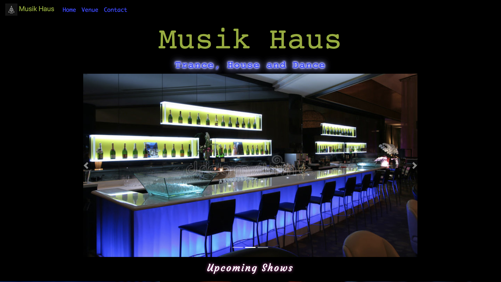

As a Cohort 10 student of Ada Developers Academy our curriculum includes: Ruby, Javascript, HTML5, CSS3, Ruby on Rails, PostgreSQL, React, Agile Methodologies, Test Driven Development, Pair-Programming and Computer Science Fundamentals (datastructures and algorithms). Following the in-class portion, we will complete a 5 month internship with a local area company. At the conclusion of our program, each student will create a Capstone project--an individually created app and/or website using 3 new self-taught technologies.
Projects

Tiny House Meetup
HTML | CSS | Bootstrap
General Info: Static site for the Tiny House Meetup group. Responsible for all aspects of design, coding and deployment.
Improvements Needed: Externalized CSS file and DRY coding
Visit Live SiteMusik Haus
HTML | CSS | Bootstrap
General Info: Design experimentation using darker color schemes with contrasting neon colors centered around a music lounge theme. Soley for illustration and design purposes.
Improvements Needed: Externalized CSS file and DRY coding
